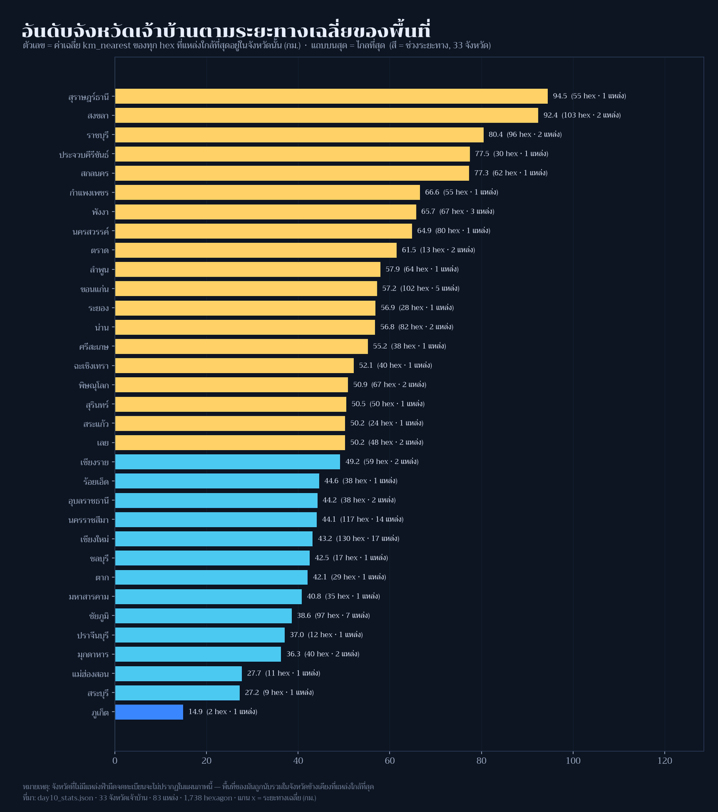

Day 10 · Prompting only — ผมให้ AI ทำแผนที่ทั้งแผ่นตั้งแต่ต้นจนจบ แล้วยกเครื่องตรวจขึ้นเป็นกรรมการ

โจทย์ทางการวันนี้คือ “For this map, make AI work for its money and produce something from start to finish in a chat window or on the command line.”
ผมจึงทดลองแบบที่ทดสอบได้จริง ไม่ใช่แค่ “ให้ AI เขียนโค้ดแล้วผมก็แก้ต่อ” ซึ่งไม่พิสูจน์อะไรทั้งนั้น กติกาที่ผมตั้งให้ตัวเองมีสามข้อ
- ส่งบรีฟชุดเดียวจบ — ไม่ส่งโค้ดตัวอย่าง ไม่บอกว่าผมมี guard อะไรบ้าง (ไม่งั้นมันตรวจข้อสอบตัวเอง)
- ผมไม่แตะโค้ดของมันก่อนตัดสิน — ให้รันแล้วเอาเข้าเครื่องตรวจที่ผมทำไว้เมื่อวาน
- กรรมการคือโค้ด ไม่ใช่ความรู้สึก —
guards.pyที่ผ่าน mutation test 13 เคส
ที่มาของแผนที่
บรีฟที่ผมส่ง (ตัดชื่อไฟล์/เส้นทางออก) สรุปได้ว่า: ทำแผนที่ “ฟ้ามืดของไทยอยู่ไกลแค่ไหน นับเป็นจังหวัด” จากไฟล์ที่มีในเครื่อง — hex 1,738 เซลล์ของ Day 3 ที่มี km_nearest กับ province, จุดฟ้ามืด 83 แห่ง, จุดสังเกต 24 แห่งของ Day 5, และ Natural Earth 10m — ห้ามดึงข้อมูลจากเน็ต ส่งมอบเป็นสคริปต์เดียว + รูป 2 ใบ + day10_stats.json + ร่างโพสต์ภาษาไทย โดยทุกตัวเลขในข้อความต้องย้อนกลับไปที่ json ได้ และให้ใส่ assert ของตัวเองไว้ด้วย
สิ่งที่ผมจงใจไม่บอก: วิธีจัดการเรื่องจังหวัด เพราะนี่คือกับดักของโจทย์นี้ — ฟิลด์ province ในไฟล์ hex คือจังหวัดของ “จุดที่ใกล้ที่สุด” ไม่ใช่จังหวัดที่ hex นั้นตั้งอยู่ และในเครื่องไม่มี shapefile จังหวัดไทยเลย
ผลลัพธ์

AI เลือกทางที่ซื่อสัตย์: มันค้นทั้ง tree แล้วยืนยันว่าไม่มีขอบจังหวัดจริง จึงไม่สร้างขอบปลอม (ถ้าเดาด้วย Voronoi จะใส่ข้อผิดพลาดเชิงเรขาคณิตที่วัดไม่ได้ + ชื่อจังหวัด EN/ไทยที่ไม่ตรงกัน) แล้วเปลี่ยนกรอบคำถามเป็น “จังหวัดเจ้าบ้าน” — เนื้อที่แต่ละจังหวัด ให้บริการ ฟ้ามืดไกลแค่ไหน พร้อมพิมพ์ข้อจำกัดนี้ไว้บนรูปและในโพสต์เอง
ตัวเลขที่มันคำนวณ (ผมตรวจซ้ำด้วยข้อมูลดิบทุกตัว):
| ตัวชี้วัด | ค่า |
|---|---|
| จังหวัดเจ้าบ้านที่ปรากฏ | 33 จาก hex 1,738 เซลล์ · จุด 83 แห่ง · ผู้สังเกต 24 แห่ง |
| ระยะเฉลี่ยไปจุดฟ้ามืดใกล้สุด | 57.4 กม. (ถ่วงน้ำหนักพื้นที่ 57.5) · มัธยฐาน 51.9 |
| ไกลสุด / ใกล้สุด | 194.1 / 0.4 กม. |
| เนื้อที่ในรัศมี 25 กม. / 50 กม. | 17.6% / 47.1% |
| 3 จังหวัดไกลที่สุด | สุราษฎร์ธานี 94.5 · สงขลา 92.4 · ราชบุรี 80.5 กม. |
| 3 จังหวัดใกล้ที่สุด | ภูเก็ต 14.9 · สระบุรี 27.2 · แม่ฮ่องสอน 27.7 กม. |
ทำไมตัวเลขของ Day 9 กับ Day 10 ถึงไม่ตรงกัน (เพิ่ม 10 พ.ย. หลังคุณผู้อ่านทัก)
มีคนถามว่า เมื่อวานเชียงรายอยู่ไกลฟ้ามืดแค่ 0.3 กม. วันนี้ทำไมไม่ติดอันดับจังหวัดที่ใกล้ที่สุด — คำตอบคือสองวันนี้ถามคนละคำถามด้วยสถิติคนละตัว ทั้งที่ใช้ฟิลด์ km_nearest ชุดเดียวกัน
| Day 9 | Day 10 | |
|---|---|---|
| คำถาม | จากกลางเมืองนี้ ไป hex ที่มืด ที่ใกล้ที่สุด ไกลแค่ไหน | hex ทุกเซลล์ ที่จังหวัดนี้เป็นเจ้าบ้าน อยู่ไกลจุดฟ้ามืดเฉลี่ยแค่ไหน |
| สถิติ | min เหนือ hex ที่มืด 309 เซลล์ |
mean เหนือ hex ใน catchment ของจังหวัด |
| เชียงราย | 0.3 กม. | 49.2 กม. (มัธยฐาน 47.3 · สูงสุด 130.3 · 59 เซลล์ · 2 จุดทะเบียน) → อันดับ 14 จาก 33 |
hex ที่ทำให้เชียงราย “ดูดี” ใน Day 9 คือเซลล์ที่ km_nearest = 23.5 กม. ซึ่งเข้าเกณฑ์มืดแบบเฉียดฉิว (เส้นแบ่งอยู่ที่ 25) และเจ้าบ้านของเซลล์นั้นคือเชียงรายเอง (ฮ่อมลมจอย) แต่เมื่อเฉลี่ยทั้ง 59 เซลล์ที่ จุดทะเบียนของจังหวัดให้บริการ ค่าก็กลับไปที่ 49.2 กม.
กรณีสุดขั้วคือ สงขลา: ตัวเมืองอยู่ห่าง hex มืดแค่ 12.5 กม. (อันดับดีใน Day 9) แต่ในฐานะเจ้าบ้าน มันคือจังหวัดที่ ไกล ที่สุดอันดับ 2 ของ Day 10 (92.4 กม.) เพราะผืนดินที่จุดทะเบียนของสงขลาให้บริการนั้นกว้างมาก · ตัวอย่างฝั่ง Day 9: ภูเก็ต 4.7 · สงขลา 12.5 · อุดรธานี 39.2 · กรุงเทพ 63.3 · ชุมพร 148.0 กม.
บทเรียนที่ผมขอแก้ที่คำของโพสต์เอง: หัวข้อเดิมเขียนว่า “3 จังหวัดที่ใกล้ที่สุด” ซึ่งกำกวม เพราะคำว่า “ใกล้” ในวันนี้หมายถึง เฉลี่ยของผืนดินที่จังหวัดให้บริการ ไม่ใช่ ใกล้จากตัวเมือง ผมปรับถ้อยคำในตารางด้านล่างแล้ว และจะติดป้าย min/mean ทุกครั้งที่รายงานระยะทางนับแต่นี้ไป

ของแถมที่ผมไม่ได้ขอแต่ชอบมาก: มันตรวจ km_nearest ของ Day 3 ซ้ำด้วยสูตร geodesic (pyproj.Geod.inv) ได้ผลต่างเฉลี่ย 0.241 กม. สูงสุด 4.417 กม. แล้วอธิบายสาเหตุได้ตรง — 24 เซลล์ที่เป็น MultiPolygon มีจุดศูนย์กลางทางภูมิศาสตร์ไม่ตรงกับศูนย์กลางของ H3 cell
กรรมการพูดอะไร
| ด่าน | ผล | ความหมาย |
|---|---|---|
| mutation selftest ของ guards เอง | 13 เคส จับได้หมด (0 พลาด) | เครื่องตรวจน่าเชื่อถือก่อนใช้ตรวจคนอื่น |
lint_thai (ข้อความไทย) |
ผ่าน | ไม่มี CJK หลุด · ไม่มีช่องว่าง+สระ · ไม่มีศัพท์ไทยแต่งเอง · ใช้ “กม.” ถูกต้อง |
guard_claims (ทุกตัวเลขต้องมาจาก stats) |
ผ่าน | ตัวเลขในร่างโพสต์ย้อนกลับไปที่ json ได้ทั้งหมด |
guard_area (ผลรวมพื้นที่ ≤ เนื้อที่อ้างอิง) |
จับได้ 1 ข้อผิดพลาด | ผลรวม area_km2 ของ hex = 515,024 ตร.กม. > เนื้อที่ไทยตาม Natural Earth 512,593 ตร.กม. อยู่ 0.47% |
ข้อผิดพลาดเรื่องพื้นที่น่าสนใจเพราะมัน ไม่ใช่ตัวเลขผิด — 515,024 คำนวณถูกจากไฟล์ แต่ ความหมายผิด: hex ที่ขอบประเทศถูก clip ให้เหลือบางส่วน เรขาคณิต union จริงคือ 496,867 ตร.กม. ทว่า attribute area_km2 ยังเก็บพื้นที่เต็มของเซลล์ การบวกกันจึงนับพื้นที่ที่ถูกตัดออกไปแล้วกลับมาอีกครั้ง ร่างโพสต์เดิมเขียนว่า “(ใกล้พื้นที่ประเทศไทยจริง ~5.13 แสน ตร.กม. มาก)” ซึ่ง เกือบถูก จนคนอ่าน (รวมถึงผม) มักผ่านตาไป — ผมแก้เป็นบรรทัดนี้:
ผลรวมพื้นที่จาก attribute ของ hex = 515,024 ตร.กม. ซึ่งมากกว่าเนื้อที่ประเทศไทยตาม Natural Earth (512,593 ตร.กม.) อยู่ 0.47% และมากกว่าพื้นที่จริงที่ hex ปูลง (union = 496,867 ตร.กม.) เพราะเซลล์ขอบประเทศถูก clip แต่คุณลักษณะพื้นที่ยังเป็นค่าเต็ม — ตัวเลขที่ควรใช้คือ union ไม่ใช่ sum
ระหว่างตรวจยังเจอข้อบกพร่องของ เครื่องตรวจ เอง 2 อย่าง ซึ่งผมแก้และเพิ่มกลับเข้า mutation test แล้ว: guard_claims เคยเข้าใจผิดกับข้อความ “1,738/1,738” (แตก token เป็น 738) และ guard_area เคยตั้ง tolerance 1% ซึ่งกว้างเกินจนเคสนี้รอด — ตอนนี้ 0.2% และจับได้จริง
วิธีทำแบบย่อ
ขั้นที่ 1: prompt ที่ส่งไป (ส่วนเงื่อนไขที่บังคับจริง)
ทำแผนที่ "ฟ้ามืดของไทยอยู่ไกลแค่ไหน นับเป็นจังหวัด" จากไฟล์ในเครื่องเท่านั้น
ส่งมอบ: สคริปต์เดียว + รูป 2 ใบ + day10_stats.json + ร่างโพสต์ภาษาไทย
กฎ: ทุกตัวเลขในข้อความต้องย้อนกลับไปที่ json ได้ · ห้ามแต่งศัพท์ไทยใหม่ ·
ใช้ `กม.` ไม่ใช่ `ก.ม.` · ถ้าไม่มีข้อมูลที่ต้องใช้ ห้ามเดา ให้บอกข้อจำกัดแทนขั้นที่ 2: โค้ดที่มันเขียนเอง (ตรวจ cross-field ด้วย assert)
assert all(h.province == nearest_site(h.centroid).province for h in hexes) # 1,738/1,738
assert abs(np.mean(geod_km) - np.mean(km_nearest)) < 1.0 # ยืนยันหน่วย
assert 0 < km_nearest.max() < 1000 # sanity boundขั้นที่ 3: วิธีตัดสิน (รันซ้ำได้)
python tools/guards.py # mutation selftest — ต้อง 0 พลาด
python tools/check_series.py # รัน guard กับทุกโพสต์ที่ publishข้อจำกัดที่ต้องบอกตรง ๆ
- โค้ดในโพสต์นี้ AI เขียน ผมไม่ได้แก้ก่อนรัน · ผมแก้เฉพาะ ถ้อยคำเรื่องพื้นที่ 1 จุดที่กรรมการจับได้
- “จังหวัด” ในแผ่นนี้คือจังหวัดเจ้าบ้าน ไม่ใช่จังหวัดที่ hex ตั้งอยู่ เพราะไม่มีข้อมูลขอบจังหวัดในเครื่อง และโมเดลปฏิเสธจะสร้างขอบปลอม — จังหวัดที่ไม่มีจุดทะเบียนจึงไม่ปรากฏในแผนภาพเลย
km_nearestเป็นระยะเส้นตรง ไม่ใช่เวลาเดินทาง (เช่นเดิมตั้งแต่ Day 7–9)- ทะเบียนจุดฟ้ามืดเป็น snapshot ที่ต้อง update เป็นระยะ
ไฟล์ประกอบ
- day10_ranking.png — อันดับ 33 จังหวัดเจ้าบ้าน
- day10_stats.json — ตัวเลขทุกตัวที่โพสต์นี้ใช้ รวมบล็อก
refereeที่บันทึกคำตัดสิน - ../day09-urban-rural/day09_stats.json — ข้อมูล hex ชุดเดียวกันในมุมของ Day 9

บทเรียน
- “ให้ AI ทำ” ไม่ใช่ “ให้ AI ทำให้แล้วผมปิดทอง” — ค่าของธีมนี้วัดกันที่ มีระบบตัดสินที่ AI ไม่ได้เขียน ไม่งั้นก็เป็นแค่การพิมพ์ต่อ
- AI ทำงานระดับ “ส่งได้” จริง — โครงโพสต์ไทยครบทุกหัวข้อ, ใช้ “กม.” ถูก, ไม่แต่งศัพท์, ตรวจ geodesic ซ้ำเอง, และที่ประทับใจสุดคือ ปฏิเสธจะสร้างข้อมูลที่ไม่มีความจริงรองรับ (ผมไม่ได้สั่งข้อนี้)
- กับดักที่ AI ตื่นกว่าผมคือ “ตัวเลขถูกแต่ความหมายผิด” — sum ของ nominal area ไม่ใช่เนื้อที่ประเทศ ถ้าไม่มี guard เรื่องหน่วย/ขอบเขตของปริมาณ ผมคงโพสต์เลขนั้นพร้อมประโยคปลอบใจว่า “ใกล้ของจริงมาก”
- guard ที่ไม่ถูกทดสอบด้วยข้อผิดพลาดจำลอง คือของแต่ง — mutation test 13 เคสทำให้ผมพบว่า tolerance ของตัวเองกว้างเกิน และ regex ของตัวเองแตก token ผิด ถ้าไม่มีรอบนั้น ผมจะเชื่อเครื่องตรวจ มากเกินไปในวันสำคัญ
- สิ่งที่เครื่องตรวจยังมองไม่เห็น: ข้อสรุปเชิงความหมาย (เช่น “จังหวัดเจ้าบ้าน” ตอบคำถามอะไรได้บ้าง) ยังต้องเป็นคนอ่านอยู่ดี — guard กัน เท็จเชิงตัวเลข ได้ กัน เท็จเชิงตีความ ไม่ได้
พรุ่งนี้ธีม Senses: Sound (Day 11) — เสียงกับแผนที่ ซึ่งผมว่าจะลองกลับบทบาท: ให้ AI เป็นผู้ตรวจ แล้วผมเป็นผู้ทำบ้าง 🗺️